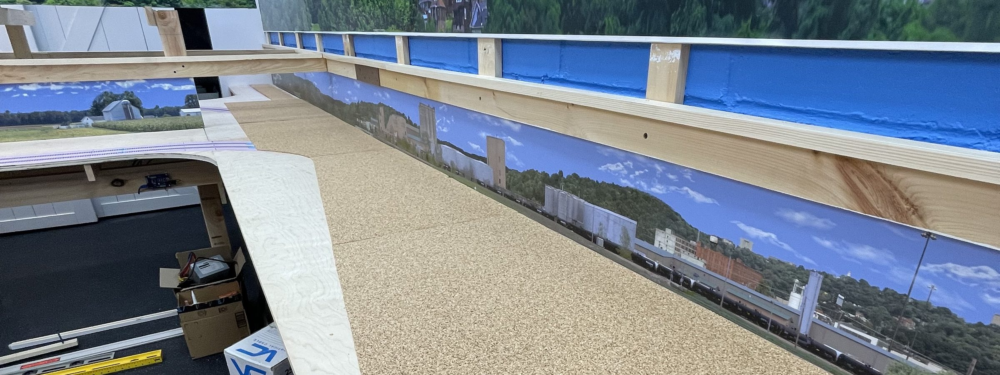
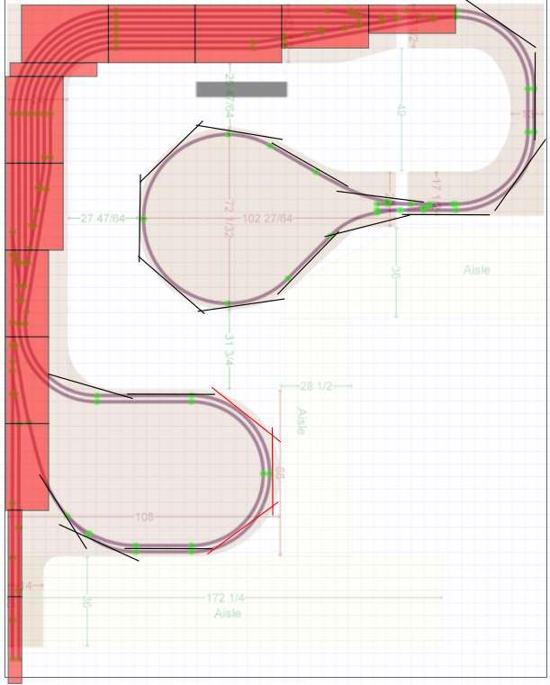
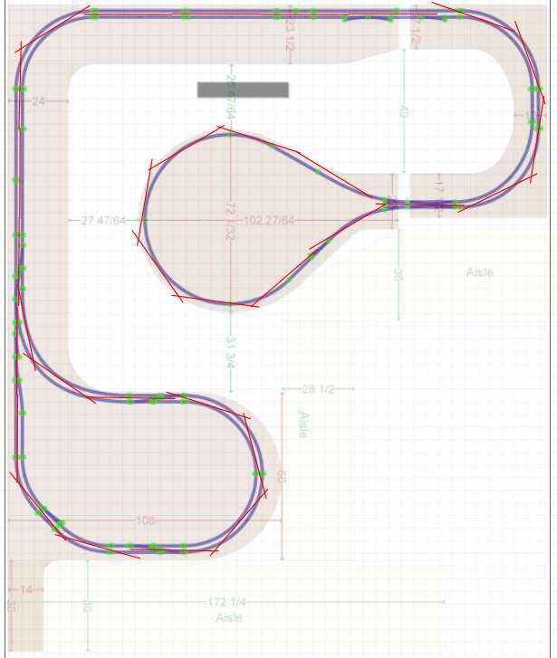
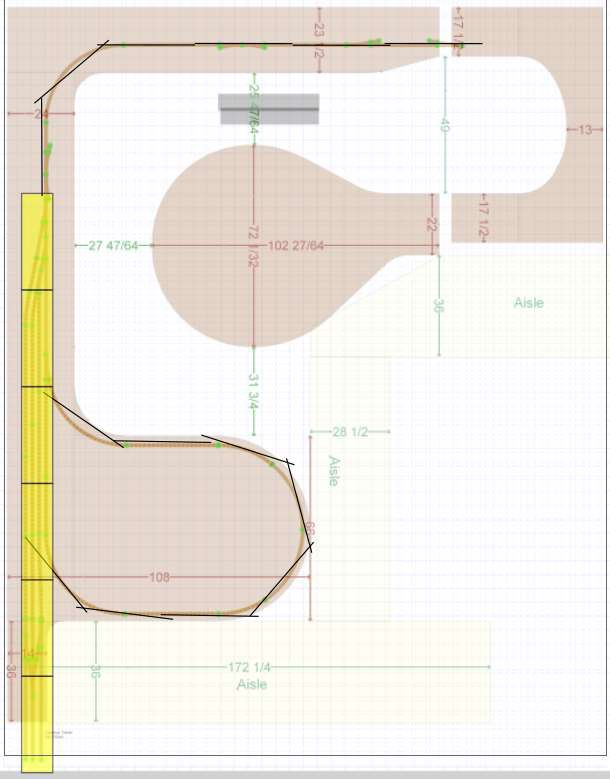
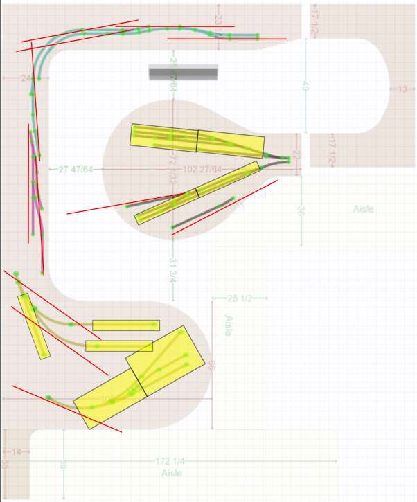

Cork roadbed plan
The August 2025 plan for the cork under the track: 6 mm cork for the main, staging and helix tracks, 3 mm for branch and industry tracks, worked out from the AnyRail plan of the layout.
A cork roadbed supplier drew up this plan in August 2025 from the AnyRail plan of the layout. It gives the cork thickness for each kind of track, the drawing of each level with the pieces marked, and a list of what the whole railroad needs. The seven-page PDF is the supplier's plan with the covering letter, names, contact details and prices left out: cork roadbed plan, August 2025 (PDF).
01Thickness and form
| Where | Cork |
|---|---|
| Main, staging and helix tracks | 6 mm (1/4 in), the standard HO height |
| Branch and industry tracks | 1/8 in (3 mm) |
| Staging yard | 6 mm sheets, so they meet the 6 mm rolls and strips. 3 mm sheets would also do, with sanding or shims at the five places where they meet 6 mm strips. |
| Hidden track, the helix included | Plain roadbed rolls, since nobody sees the edge |
| Visible track | Strips with bevelled edges |
| Crossovers | 15 in crossover pads |
| Structures | 1/8 in hardboard bases, the same thickness as the 3 mm cork, so a building can be detailed and lit off the layout and lifted out later |
02The level drawings
Each drawing is the AnyRail plan with the roadbed laid over it.




03The helix
The two-track helix takes about 48 ft of straight-edge roadbed per level for the two tracks, which is one full loop. With the lead-in the figure is 52 ft; the lead-in adds 6 sections of 6 mm bevel strips.
04Material list
The plan totals 588 ft. AnyRail reports more than 700 ft; the difference is that yards and other multi-track areas use sheets. Strips and rolls carry about 10% overage. Partial sheets are added up into full 24 x 36 in sheets, cut to the sizes on the drawings.
| Item | Staging | Main | Branch | Industry | Helix | Total |
|---|---|---|---|---|---|---|
| 6 mm roll (ft) | 78 | 0 | 0 | 0 | 147 | 225 |
| 6 mm bevel strip (sections) | 6 | 55 | 0 | 0 | 6 | 67 |
| 3 mm bevel strip (sections) | 0 | 0 | 14 | 12 | 0 | 26 |
| 15 in x 6 mm crossover pad | 0 | 4 | 0 | 0 | 0 | 4 |
The plan's order quantities, with the overage: 10 rolls of 6 mm, 68 6 mm bevel strips, 27 3 mm bevel strips, 13 full 24 x 36 in sheets of 6 mm, 7 full 24 x 36 in sheets of 3 mm and 4 crossover pads.
More: Track plan · The Build · Behind the Scenes